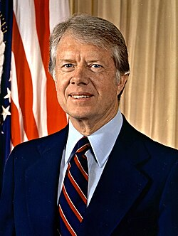

Jimmy Carter
President, 1924 to 2024

The 39th president, from 1977 to 1981, and earlier governor of Georgia. In 1973, as governor, he filed reports with the International UFO Bureau and NICAP saying he had seen an unidentified flying object in Leary, Georgia, in October 1969; records show the sighting was on January 6, 1969. 1,2
During his 1976 campaign he said that if elected he would make every piece of information the country had about UFO sightings available to the public and scientists, but once in office he distanced himself from the promise, citing defense implications. 1
He said he never believed it was an alien craft. Skeptics Robert Sheaffer and Allan Hendry concluded he saw Venus; in 2016 a former Air Force scientist suggested a barium cloud released that evening for upper-atmosphere research. 1,2
Open in the interactive Watcher
Related
- Jimmy Carter's sighting The Leary sighting, 1969
- The President President, 1977 to 1981
Sources
- Jimmy Carter UFO incident Wikipedia
- Jimmy Carter Wikipedia